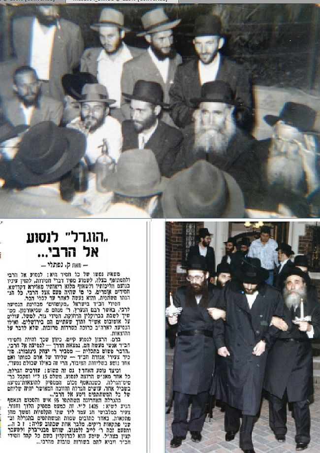

ר’ לייבל - כך כינוהו כולם - היה חסיד בעל כשרונות רבים שעסק רבות בפעילויות ובמבצע
ר’ לייבל - כך כינוהו כולם - היה חסיד בעל כשרונות רבים שעסק רבות בפעילויות ובמבצעים שונים של הרבי מה”מ. הוא כיהן כמשפיע בבית הכנסת חב”ד בבני ברק, וכן כמנהל מוסדות חינוכיים, לצד היותו פעיל נמרץ במסגרת שירותו הצבאי ולאחר מכן. * ר’ לייבל היה הזוכה הראשון בגורל לנסיעה לרבי, וכבר בשנת תשי”ד זכה להגיע לרבי
ר’ לייבל - כך כינוהו כולם - היה חסיד בעל כשרונות רבים שעסק רבות בפעילויות ובמבצעים שונים של הרבי מה”מ. הוא כיהן כמשפיע בבית הכנסת חב”ד בבני ברק, וכן כמנהל מוסדות חינוכיים, לצד היותו פעיל נמרץ במסגרת שירותו הצבאי ולאחר מכן. * ר’ לייבל היה הזוכה הראשון בגורל לנסיעה לרבי, וכבר בשנת תשי”ד זכה להגיע לרבי חרף כל הקשיים. * חייו היו קודש לתורה ולחסידות ולגרום נחת רוח לרבי. מעולם לא ראה בתפקידיו או בפעילותו מקום להתכבד בו • שביבים אחרי מיטתו של המשפיע הרב לייב זלמנוב ע”ה

דומה כי כל אלה נשזרו על ראשו של החסיד הרה”ח ר’ יחיאל מיכל יהודה לייב זלמנוב, שהיווה דוגמה לחסיד חי רב פעלים.
“ר’ לייבל”, כך כינוהו כולם, עמד תמיד בראש המערכות הציבוריות השונות שהרבי רצה בהן, אם בשדה החינוך ואם בשדה הפעילות. מעולם לא ברר את תפקידיו ותמיד התייצב כחייל נאמן למלא אחר הוראות הרבי בלי פניות אישיות. חייו החסידיים היו גדושים בפעילות ובעשיה חסידית.
זאת ועוד, ר’ לייבל היה אוצר בלום של דברי ימי חסידות חב”ד, ובמוחו שמר זכרונות מחסידי חב”ד ברוסיה, בתל אביב ובכפר חב”ד בראשית ימי היווסדה. פעמים רבות חלק עמי מאוצרותיו. דיבורו עם הזולת תמיד היה בידידות מופגנת ובמאור פנים. כשסיפר מזיכרונותיו, היה מתאר ומצייר בפרוטרוט כאילו הדברים קרו אך אתמול. מאידך, כאשר לא ידע או לא זכר פרט מסוים, לא ניסה להשלים את הפאזל לפי השערה, אלא היה קובע בפשטות “לא יודע”, “לא זוכר”, וכדומה. הוא סימל בהתנהגותו דמותו של חסיד אמיתי, צנוע ועניו.
ילדות בצל מסירות נפש
הרה”ח ר’ יחיאל מיכל יהודה לייב זלמנוב, שכונה בפי כל בפשטות חסידית אופיינית: ר’ לייבל, נולד בשנת תרפ”ו בעיר קורסק שברוסיה. באותה תקופה רדפו הקומוניסטים את שומרי המצוות בכלל, ואת חסידי חב”ד בפרט. נוכח זאת החדיר אביו הרב שמואל זלמנוב בילדיו מנה גדושה של מסירות נפש, והמשיך לחנכם לדבוק בחיי תורה ומצוות וללכת בדרכי החסידות וההתקשרות לרבותינו נשיאינו.
האב הרב שמואל זלמנוב, כיהן כשוחט לעדת החסידים בעיר מגוריו. אולם עבודתו חרגה הרבה מעבר לתחום השחיטה, והוא עשה רבות לביצור חומות היהדות והחסידות בקרב מאות יהודי העיר. שמעו כשוחט מומחה הגיע למרחוק, וקבוצה מתלמידי ישיבת תומכי תמימים באו ללמוד אצלו שחיטה. הלימודים התקיימו בחשאיות גמורה.
במקביל גם שימש כמוהל וזכה למול תינוקות רבים מתוך מסירות נפש. ביתו היה תמיד פתוח לרווחה בפני אורחים, וכאשר שכן בעיר סניף של ‘תומכי תמימים’ מחתרתי, היו התלמידים בני בית אצלו למרות הסכנה. לא בכדי סבל ר’ שמואל מרדיפת השלטונות. לאחר מעצר שנמשך חודשים ארוכים שוחרר בתוספת הבהרה, שכדאי לו לעזוב את העיר. בלית ברירה עבר להתגורר באוזירקי שבפרברי לנינגרד.
כעבור תקופה נוספת היגרה משפחת זלמנוב למוסקבה, שם התגוררו בפרבר ‘קראטובה’. גם כאן היה בית המשפחה פתוח לרווחה בפני החסידים. בן האורחים היה המשפיע הנודע הרב ניסן נמנוב שהסתתר בביתם במשך תקופה. בשנים אלו למד הילד לייבל אצל ר’ ישראל איזראעליט.
כאשר הרדיפות והמעקבים התגברו, שלחו אביו ללמוד בעיר קרמנצ’וג שבאוקראינה, שם למד אצל המלמד ר’ בן ציון מרוז. הלימודים התקיימו בכיתות קטנות. בתחילה למדו ב”כיתה” שני תלמידים בלבד, לייבל ומשה ניסלביץ’, אך כאשר הרדיפות גברו, נותר לייבל תלמיד יחיד אצל ר’ בן ציון מרוז. הלימודים התקיימו בבית כנסת, והחלו בשעה מאוחרת, לאחר שאחרון המתפללים עזב את המקום. באותה תקופה אכל לייבל מידי שבת על שולחנו של החסיד הנודע ר’ ישראל נח בליניצקי, שם גם היו נערכות התוועדויות חסידיות, חרף הרדיפות והמעקבים.
החיים תחת השלטון הקומוניסטי הפכו לקשים יותר ויותר, ומשפחת זלמנוב החליטה לעלות לארץ הקודש. לאחר תקופת מתח, המאמצים להשגת האישורים המתאימים הוכתרו בהצלחה, ומשפחת זלמנוב עלתה לארץ הקודש.
הכנסת אורחים בתל אביב
על ‘קליטת העליה’ בארץ הקודש, סיפר ר’ לייב זלמנוב:
“הגענו לארץ בשלהי אלול תרצ”ו. הסוכנות היהודית דאגה לשכן אותנו בחדר בבית מלון ישן, שהיה נראה יותר כמו חורבה. אפילו מים לא היו בו. כך נאלצנו משפחה בת עשר נפשות לסבול בחדר קטן וצפוף ללא מים וללא תנאים מינימליים. כעבור זמן קצר נסע אבא עם אחי ר’ זאב (וועלקע) לתל–אביב, וכעבור יומיים שב ולקח אותנו לתל אביב אל בית משפחת קרסיק”.
משפחת זלמנוב התארחה בבית הרב אליעזר קרסיק. חלק מהילדים פוזרו בקרב משפחות אנ”ש עד ליום בו הצליחו למצוא דירה הולמת. לימים משפחת זלמנוב פתחה את ביתה בפני אורחים ובפני התוועדויות של חסידים.
כך למשל בשנים שבהן יצא אדמו”ר הריי”צ בקריאה “לאלתר לתשובה לאלתר לגאולה”, בתקופת מלחמת העולם השניה, יצאו הרב אפרים וולף והרב דוד חנזין לעסוק בהפצת קריאת הרבי בארץ הקודש. הם הלכו לבתי כנסת ברחבי תל אביב, ובכל מקום חילקו את דפי ה’קול קורא’. לעיתים קרובות אף נסעו למושבים דתיים ברחבי הארץ והפיצו גם שם את בשורת הגאולה. תנאי התחבורה באותן שנים היו קשים. “בכל פעם שהשניים לא יכלו למצוא אוטובוס לירושלים, היו נשארים לישון בביתנו”, סיפר ר’ לייבל כעבור שנים. “מיטות מיותרות לא היו לנו, ועל כן היינו פורסים להם שני מזרונים זה ליד זה. לעיתים ראיתי אותם ‘רבים’ ביניהם, משום לכל אחד נדמה היה שהמזרון שנתנו לו טוב יותר מזה של חברו”…
בשנים אלו למד ר’ לייב בישיבת ‘אחי תמימים’.
הזוכה המאושר
זמן קצר לאחר קבלת הנשיאות על ידי הרבי מה”מ, יצא הרב אליעזר קרסיק מתל אביב לניו יורק. בטרם יצא לדרכו, ביקש ר’ לייבל, אז בחור צעיר, שיזכירו בפני הרבי לברכה בכל העניינים. ואכן, בעיצומה של התוועדות פורים תשי”א, ניגש הרב קרסיק לרבי לאמירת ‘לחיים’, ובמעמד זה הזכיר את “לייבל זלמנוב” וביקש ברכה עבורו. הרבי השיב מיד: יחיאל מיכל יהודה לייב בן רחל.
עוד שנים ארוכות היה ר’ לייבל מספר סיפור זה כשהוא מתמוגג בהתרגשות - מאין ידע הרבי את שמו המלא עוד בטרם כתב לו אפילו מכתב אחד…
ר’ לייב אף התפרסם כ”זוכה בגורל הראשון”. באותן שנים העלות הכספית לנסיעה לארה”ב הייתה גבוהה והמשכורות היו נמוכות. בשנת תשי”ג יזם החסיד ר’ רפאל כהן ע”ה הגרלה בין חסידי חב”ד בארץ הקודש על מימון הנסיעה לרבי. 63 חסידים, בעיקר מכפר חב”ד ומתל אביב, רכשו כרטיס הגרלה תמורת 15 לירות. ההגרלה נערכה ברוב עם, והזוכה המאושר היה ר’ לייב זלמנוב, עוד בטרם נישואיו, כאשר היה בעיצומו של שירות צבאי ברבנות הצבאית. עובדה זו עמדה בעוכריו, שכן הצבא לא איפשר לו לצאת מהארץ. לאחר חודשים ארוכים של מאמצים, הצליח לקבל היתר יציאה מהצבא ובחודש אייר תשי”ד נסע לרבי.
במהלך שהותו אצל הרבי, זכה להיכנס ל’יחידות’, במהלכה נתן לו הרבי הוראות מיוחדות לגבי פעילותו בצבא. בשבת מברכין חודש סיון של אותה שנה, דיבר הרבי בהתוועדות על אודות ‘אנשי הצבא’ ובסיום השיחה אמר הרבי: “מכיוון שנוכח כאן אחד מהצבא, שהוא גם קצין בצבא, וקצין דתי עם זקן שלם, ובצבא הרי נהוג ששרים ‘מארש’ ידאג איפה שיושר כאן ‘מארש’…”
ההגרלות נמשכו וכל זכיה הפכה לחגיגה חסידית של ממש עבור הזוכה.
ארבע שנים בלבד חלפו מאז ההגרלה הראשונה, ושוב זכה ר’ לייב זלמנוב! המאורע היה כה חשוב וייחודי, עד שדבר זכייתו פורסם בעיתון ‘מעריב’ של אותם ימים…
חסידות בקרב החיילים
כבר בשנת תשי”ב גויס ר’ לייבל לצבא והוצב ברבנות הצבאית. בתקופת שירותו פעל רבות בקרב חיילי צה”ל, ועל כך זכה לקבל עידוד מהרבי וברכות לרוב. עוד בטרם עזב את הארץ בנסיעתו לרבי, הרבי שיגר לו מכתב בו הוא מורה לו לדאוג שפעילותו זו לא תופסק בתקופת נסיעתו.
עם בואו לחצרות קדשנו, זכה להיכנס ל’יחידות’ במהלכה אמר לו הרבי: “שמעתי שיש לך כישרון לנאום. כישרון זה עליך לנצל להפצת תורה ויהדות בין אנשי הצבא”. כששאל ר’ לייבל, האם לדבר עם החיילים בשפתם?, השיב לו הרבי: “יש לדבר עמם על קבלת–עול. אפשר להביא להם הוכחה כללית מהעניין של הקדמת נעשה לנשמע, וכהמחשה אפשר להראות דוגמה הלקוחה מחיי היום–יום בצבא. בצבא - המשיך הרבי - יש לחיילים דרגות שונות - קצינים ומפקדים. והנה גם מי שנמצא בתפקיד בכיר יותר, שחיילים רבים סרים למשמעתו, מציית לפקודה עליונה מהמטה–הכללי באותה מידה שחייל פשוט (טוראי) מציית למישהו בדרגה גבוהה (סמל). זו דוגמה לעניין של קבלת עול - נעשה ואחר כך נשמע”.
ר’ לייב אירגן ימי עיון לחיילים, ואף הכניס משיחות קדשו של הרבי בעיתון “מחניים” שיצא לאור על ידי הרבנות הצבאית. גם על כך זכה לקבל הכוונה ועידודים מיוחדים.
מפיץ המעיינות
בשנת תשט”ו בא בברית הנישואין עם רעייתו לבית הרצוג, וכבר בתקופה הראשונה התיישב הזוג הצעיר בבני ברק. זמן מה לאחר מכן, הוקם לראשונה ‘מנין חב”ד’ בבני ברק, כאשר במשך תקופה ארוכה התארח המניין בבית משפחת זלמנוב. גם שיעורי חסידות שהתקיימו לתלמידי ישיבות מחוגים שונים, התקיימו בביתו. ר’ לייבל שהיה חסיד מלא שמחה, היה מלא וגדוש בתורה וחסידות. הוא עצמו מסר שיעורי חסידות במקומות רבים ברחבי הארץ. כן פעל במרץ נעורים בכל מבצע ופעילות במסגרת צעירי חב”ד בארץ הקודש שהוקמה באותן שנים.
בכשרונותיו הברוכים זכה למלא תפקידים שונים במרץ רב, ופעל ככל יכולתו כדי לגרום נחת רוח לרבי.
גם לאחר שבית הכנסת עבר למבנה של קבע ברחוב הרב קוק בבני ברק, המשיך ר’ לייבל להיות הרוח החיה בבית הכנסת. הוא לימד חסידות, אירגן התוועדויות ועשה רבות לטובת המתפללים בגשמיות וברוחניות. לימים אף מונה למשפיע בבית הכנסת לצד הגה”ח הרב יעקב כץ.
במשך השנים נטל חלק גם בפעילויות חינוכיות, כך למשל בחודש סיון תשי”ח כאשר התמנה למנהל ‘בית רבקה’ בכפר חב”ד, ובשנים מאוחרות יותר ניהל את תלמוד תורה חב”ד בבני ברק. במקביל לעבודת הניהול, דאג להכניס חיות חסידית והתקשרות אמיתית בילדים. בין השאר היה עורך לתלמידים סעודת ‘מלוה מלכה’ בביתו הפרטי ומקריא לתלמידים מדברי אדמו”ר הריי”צ וכן אגרות קודש שקיבל.
• • •
היריעה קצרה מהכיל את יריעת חייו המרתקת של ר’ לייבל, ועוד רבות ניתן לכתוב על פועלו, וחזון למועד.
ביום שני השבוע, כ”ה בטבת, הלך לעולמו ונטמן בעיר הקודש צפת. הותיר אחריו את רעייתו וכן בנים ובנות: ר’ אליעזר זלמנוב מקראון הייטס, ר’ שמואל זלמנוב מכפר חב”ד, גב’ לידר מבני ברק, גב’ בלוי מירושלים וגב’ קסלמן מקראון הייטס.
דומה כי את ר’ לייבל ניתן לתאר במילים אחדות: חסיד ומקושר לרבי, אשר כל חייו היו מוקדשים לגרום נחת רוח לרבי, בכל זמן, בכל עת ובכל מצב.
(בהכנת הכתבה הסתייע כותב השורות במקורות רבים ובהם: ראיונות עבר עם המנוח, אגרות קודש, עבד אברהם אנכי, זכרון שמואל, אוצר החסידים, בית משיח, התקשרות, כפר חב”ד ועוד.)